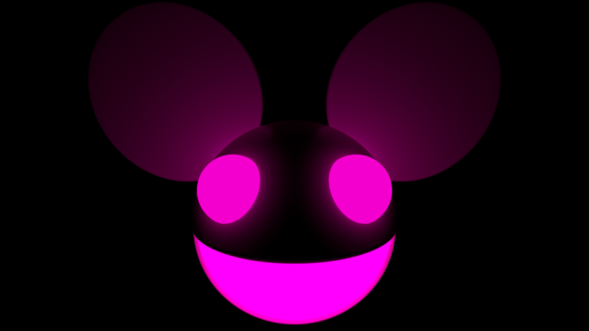

00:00 - deadmau5 - Fn Pig (Michael Gold Arrangement)
02:39 - deadmau5 - Fn Pig
08:55 - deadmau5 vs Dillon Francis - Some Chords (Prakhar Edit)
14:40 - deadmau5 - Moar Ghosts 'n Stuff
17:00 - deadmau5 - Ghosts 'n stuff (Instrumental Mix)
19:31 - deadmau5 - Channel 42
24:03 - deadmau5 - Your ad here ( you there edit) vs Longest Road (Prakhar Extended Edit)
30:52 - You there (acapella)
31:23 - deadmau5 - A City in Florida
36:26 - deadmau5 - Animal Rights (Complicated edit)
41:57 - Complicated (acapella)
42:18 - deadmau5 - Sometimes Things Get, Whatever
43:50 - deadmau5 - Complications
47:48 - deadmau5 - Suckfest 9001
52:30 - deadmau5 - Aural Psynapse
56:52 - deadmau5 - There Might Be Coffee
1:02:13 - deadmau5 - Gula
1:07:22 - deadmau5 - Avaritia
1:09:07 - deadmau5 - Strobe
1:19:10 - deadmau5 - Strobe (dimension remix)